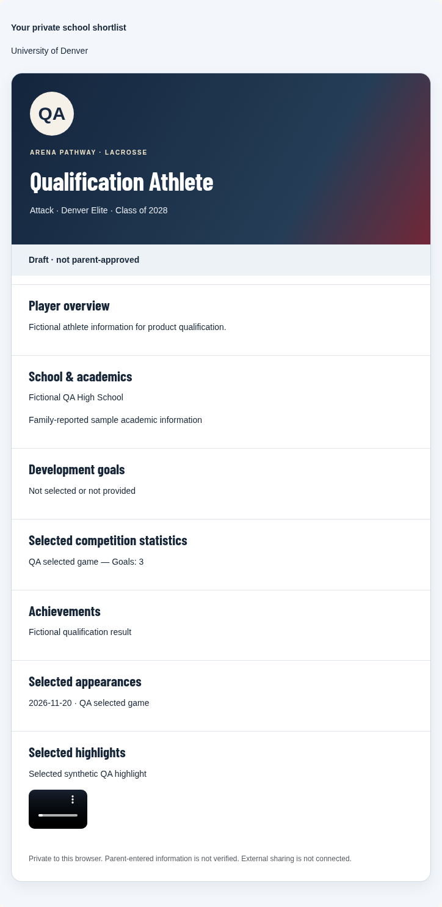
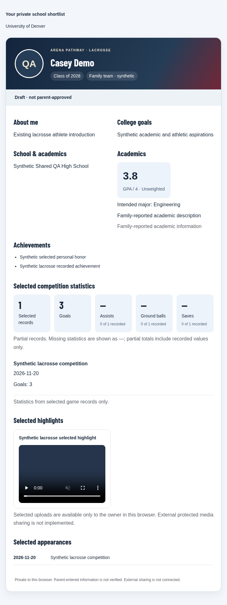
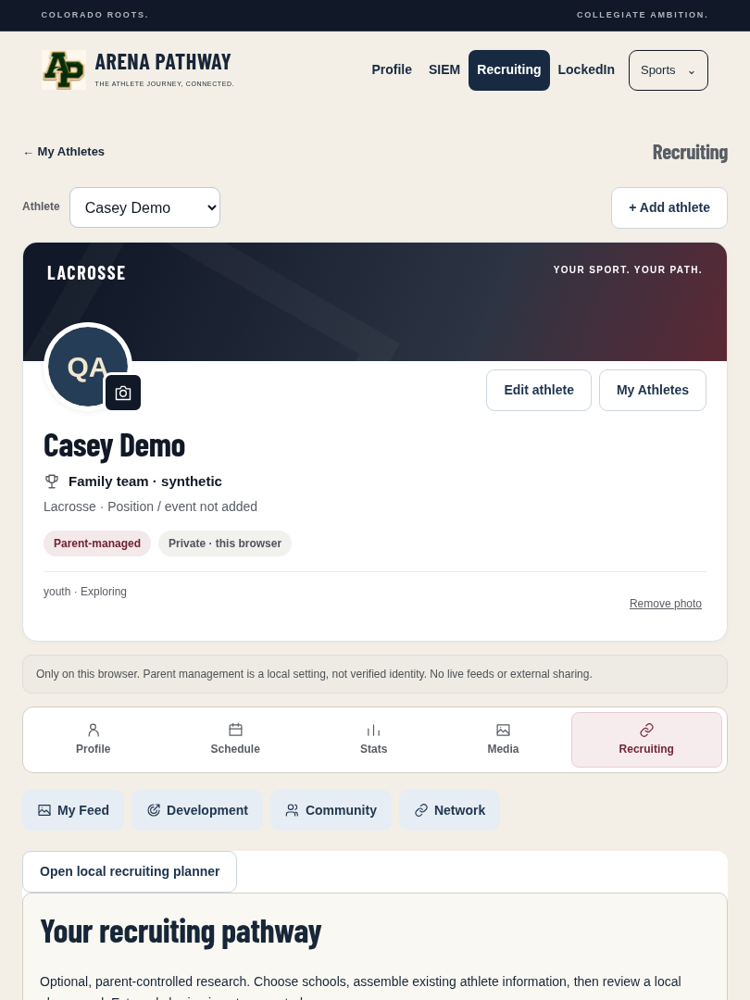
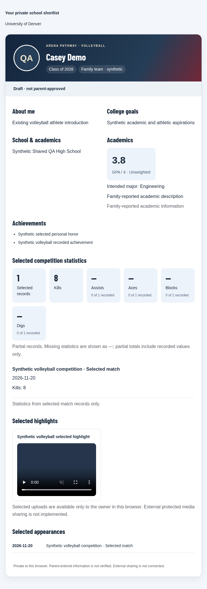
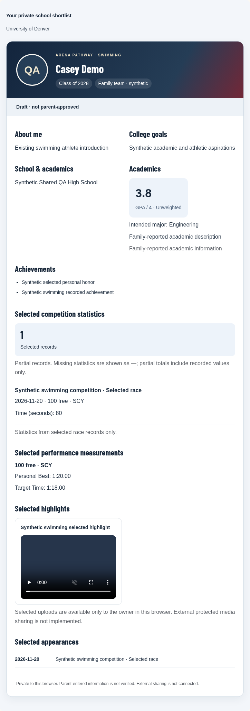
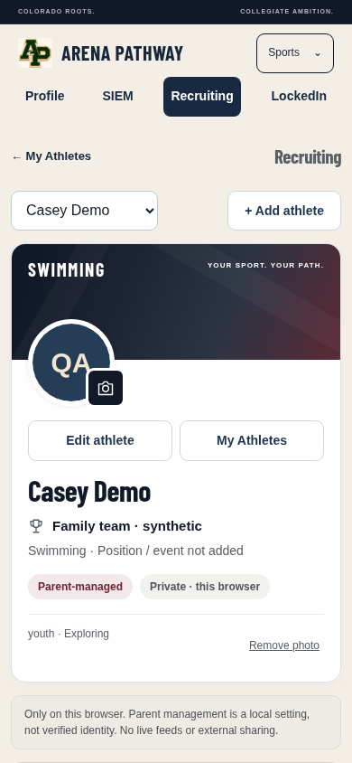

Actual browser renders. Soccer Center's current public demo is fictional; AP uses clearly synthetic QA input. AP before is the validated November15 baseline. Captures use an810×1080 viewport unless labeled otherwise; component/full-page captures extend beyond it. Acceptance report · Source-to-target reuse matrix.
Coach card: baseline versus shared renderer
AP before: generic stacked sections and initials only

AP after: selected portrait, introduction, academics, achievement/stat blocks and playable highlight

Current Soccer Center reference versus current AP
Soccer Center: actual current anonymous demo cardArena Pathway: same conditional information hierarchy and selection-first contract, AP brand
College discovery and builder
SC college/program discovery — actual demoAP Lacrosse — existing programs, explicit contact-verification gap
SC profile builder — actual demoAP — same athlete data, SC-derived grouped field selection

Same engine, different sport data
BasketballVolleyball — nested tournament match

Swimming — selected comparable race/PB/target, no summed race times

iPhone responsive view

Protected SC parent routes require sign-in; no authenticated equivalence is asserted. No SC code/data was modified. This HTML is a local review artifact; GitHub can show source/download but does not host it as a rendered website.